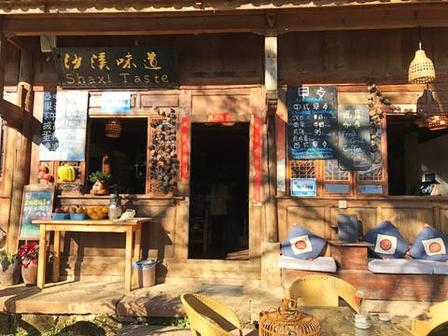

沙溪古镇的一碗米线
去年秋天在沙溪古镇，清晨出门散步时，遇到一家开在老巷子里的早餐店。店主是一对老夫妻，不会说普通话，却笑着用手势问我要吃什么。我点了一碗米线，汤底是熬了很久的土鸡高汤，撒上当地的腌菜和薄荷，一口下去，暖到了心底。
吃完后我想多付点钱，老奶奶却摆摆手，指了指墙上的价目表，坚持只收10块钱。临走时，她还塞给我一个刚烤好的青稞饼，说路上吃。那碗米线的味道，比任何山珍海味都难忘，也让我明白，旅行中最珍贵的，从来不是风景，而是遇到的那些温暖的人。
在路上，遇见温暖，收获成长
去年秋天在沙溪古镇，清晨出门散步时，遇到一家开在老巷子里的早餐店。店主是一对老夫妻，不会说普通话，却笑着用手势问我要吃什么。我点了一碗米线，汤底是熬了很久的土鸡高汤，撒上当地的腌菜和薄荷，一口下去，暖到了心底。
吃完后我想多付点钱，老奶奶却摆摆手，指了指墙上的价目表，坚持只收10块钱。临走时，她还塞给我一个刚烤好的青稞饼，说路上吃。那碗米线的味道，比任何山珍海味都难忘，也让我明白，旅行中最珍贵的，从来不是风景，而是遇到的那些温暖的人。

游玩青海湖时，临时决定在湖边的牧民帐篷住一晚。晚上没有光污染，抬头就是漫天繁星，银河清晰得仿佛触手可及。牧民大哥搬来小马扎，和我一起坐在草地上，用不太流利的普通话讲他的生活：夏天放牧，冬天守着帐篷，看着青海湖的日出日落，一晃就是几十年。
他说：“我们没有见过外面的世界，但青海湖就是我们的全世界。”那一刻，我突然懂了，旅行不是逃离，而是学会欣赏不同的生活方式，懂得知足和感恩。那晚的星空，成了我旅行记忆里最亮的底色。